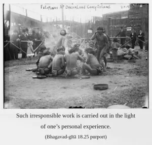

That action performed in illusion, in disregard of scriptural injunctions, and without concern for future bondage or for violence or distress caused to others is said to be in the mode of ignorance.

One has to give account of one’s actions to the state or to the agents of the Supreme Lord called the Yamadūtas. Irresponsible work is destructive because it destroys the regulative principles of scriptural injunction. It is often based on violence and is distressing to other living entities. Such irresponsible work is carried out in the light of one’s personal experience. This is called illusion. And all such illusory work is a product of the mode of ignorance.